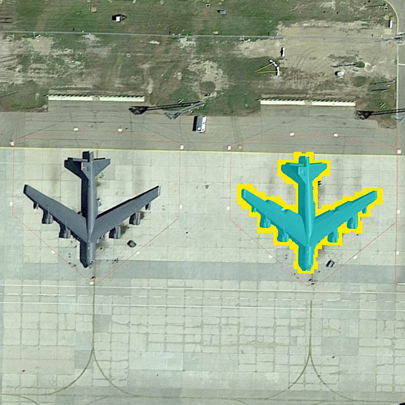
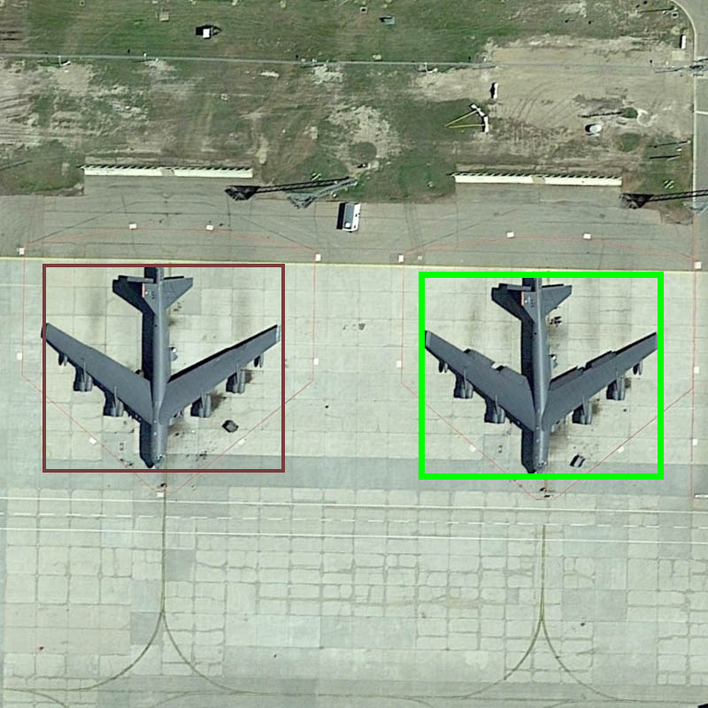

Spatial-Program Execution for Training-Free Referring Remote Sensing Image Segmentation
1School of Internet, Anhui University
2National Engineering Research Center for Agro-Ecological Big Data Analysis & Application, Anhui University
3State Key Laboratory of Information Engineering in Surveying, Mapping and Remote Sensing, Wuhan University
*Corresponding author
Under ReviewReferring remote sensing image segmentation (RRSIS) segments the single object that an aerial image's natural-language expression refers to. Existing training-free methods resolve the expression through implicit vision–language activations or region–text similarity, which gives weak control over the spatial, comparative, and ordinal relations that dominate aerial referring and cannot represent constructions such as the largest ship or the second court from the left. We propose GeoSelect, a training-free pipeline that reframes referring as the execution of a typed spatial program. A frozen, text-only language model synthesises a program in a small domain-specific language from the expression alone; a well-formedness checker accepts it; and a deterministic executor evaluates it over a single scored candidate set type that unifies continuous geometric fields with discrete set and order operators (extremum, ordinal, counted union, binary relation). A reliability ladder degrades any failing program to a field-only selector, so a malformed program falls back rather than forfeiting an answer. GeoSelect attains 58.86 mIoU / 59.48 oIoU on RRSIS-D test (more than twice the best prior training-free method and about 93% of the supervised specialist RMSIN with no training), and the identical configuration transfers to RISBench at 55.27 mIoU. Holding candidates and the segmenter fixed, explicit program execution substantially improves the selector over implicit matching, attributing the gain to the executed representation rather than the backbone. An image-level exposure audit confirms the result is not inflated by detector–benchmark overlap.
Same candidate boxes, same segmenter; only the selector differs. A real RRSIS-D example: “the airplane on the right”, with several same-class candidates.

GeoSelect executes the program and picks the airplane matching the ground truth ✓

The executed program scores every candidate; brighter is a higher score, and the chosen box (green) wins.
A typed spatial program, synthesised then executed over one scored candidate set; every component is frozen and off-the-shelf.
A frozen text-only LLM synthesises a typed program in a small DSL from the expression alone; a well-formedness checker accepts it; a deterministic executor runs it bottom-up. Every intermediate program, field, and ranking is inspectable.
One scored-candidate-set type unifies continuous geometric fields (position, proximity) with discrete set and order operators (extremum, ordinal, counted union, relation) that express the superlative, ordinal, and compositional constructions a closed lexicon cannot.
An ill-formed or failing program falls back to the field-only selector on the same candidates, which is recovered exactly; in aggregate the full system stays at or above this field-only floor, so a malformed program never forfeits an answer.
A real, frozen-config trace; click each stage. The program is executed over one scored candidate set, so every intermediate is inspectable.
Supervised specialists and trained VLMs are an upper reference, not training-free competitors.
| Method | Venue | mIoU | oIoU |
|---|---|---|---|
| Fully-supervised specialists | |||
| LAVT | CVPR'22 | 61.12 | 76.48 |
| LGCE | TGRS'24 | 60.98 | 76.33 |
| RMSIN | CVPR'24 | 63.38 | 76.55 |
| FIANet | TGRS'24 | 64.01 | 76.81 |
| CroBIM | arXiv'25 | 64.24 | 76.37 |
| ProVG | arXiv'26 | 65.44 | 77.62 |
| BTDNet | arXiv'25 | 66.04 | 79.23 |
| RSRefSeg2 | TGRS'26 | 69.17 | 79.45 |
| Trained vision–language models | |||
| GeoGround | arXiv'24 | 60.50 | – |
| Text4Seg++ | TPAMI'26 | 62.80 | 74.20 |
| SegEarth-R1 | arXiv'25 | 66.40 | 78.01 |
| Sosa et al. (LoRA) | arXiv'26 | 67.6 | – |
| Training-free | |||
| SAM3 | arXiv'26 | 15.50 | 16.87 |
| EKP-HRM | GRSL'26 | 19.21 | 20.68 |
| DGL-RSIS | JAG'26 | 21.50 | – |
| Sosa et al. (zero-shot) | arXiv'26 | 24.9 | – |
| RSVG-ZeroOV | AAAI'26 | 28.35 | 22.83 |
| GeoSelect (ours) | – | 58.86 | 59.48 |
×2.08 over the best prior training-free method (RSVG-ZeroOV) and ×3 over EKP-HRM, about 93% of the supervised specialist RMSIN, with no training.
| Method | Venue | mIoU | oIoU |
|---|---|---|---|
| Fully-supervised | |||
| RRN | CVPR'18 | 43.18 | 49.67 |
| BRINet | CVPR'20 | 42.91 | 48.73 |
| CMPC+ | TPAMI'21 | 46.73 | 53.98 |
| CRIS | CVPR'22 | 55.18 | 69.11 |
| LAVT | CVPR'22 | 61.93 | 74.15 |
| RMSIN | CVPR'24 | 63.07 | 74.09 |
| CARIS | MM'23 | 65.79 | 75.10 |
| CroBIM | arXiv'25 | 67.32 | 73.61 |
| RSRefSeg2 | TGRS'26 | 72.57 | 74.77 |
| Training-free | |||
| SAM3 | arXiv'26 | 21.09 | 26.20 |
| RSVG-ZeroOV | AAAI'26 | 31.84 | 26.35 |
| GeoSelect (ours) | – | 55.27 | 55.88 |
A single frozen configuration, selected before test evaluation, transfers directly, at ×1.74 the best prior training-free method, surpassing the early LSTM-based supervised methods RRN, BRINet, and CMPC+ with no test-set recalibration.
A typed program, synthesised by a frozen text-only LLM and executed over one scored-candidate-set type that unifies continuous fields with discrete operators, reaches 58.86 mIoU on RRSIS-D, ×2.08 the prior training-free baseline.
With detection and segmentation held fixed, explicit program execution beats the stronger of two implicit selectors by +12.06 mIoU (+18.8 on image-relative, +0.9 on pure-attribute), a per-subset pattern that rules out detector or segmenter explanations.
The identical frozen configuration transfers across domains to RISBench, and an image-id-level seen/unseen exposure audit shows the leakage-robust unseen subset still reaches 58.4 mIoU, well above the best prior training-free method, so the detector overlap is a measured strength, not an unexamined confound.
Real frozen-config outputs across the expression strata. Click any case for its synthesised program, per-stage trace, and ground truth.
red = candidate boxes · brighter = higher score, green = chosen box · cyan = GeoSelect mask · yellow = ground truth. Click any case for its synthesised program and per-stage trace.
@article{jiang2026geoselect,
title = {GeoSelect: Spatial-Program Execution for
Training-Free Referring Remote Sensing Image Segmentation},
author = {Jiang, Yuhang and Deng, Guohui and Xu, Miaozhong and Ruan, Chao and Zhao, Jinling and Huang, Linsheng},
journal = {arXiv preprint arXiv:2607.03869},
year = {2026}
}